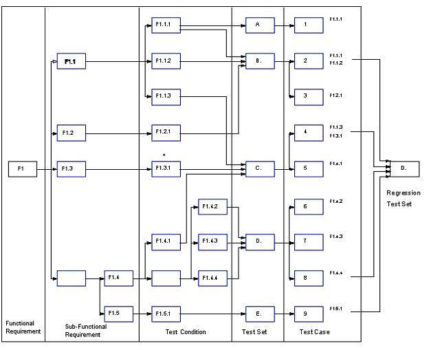

Test Design Overview
Steps
-
Identify the business and technical requirements. A requirement can often be put into an, "if then ," form. These
requirements may have already been documented in other project artifacts. If this is not the case, develop the
Functional Requirements and Structural Requirements test matrices.
-
Develop test scenarios by conducting facilitated sessions with the client. Categorize the priority of each test
scenario as high, medium, or low. This step may not be required if use cases are available.
-
Decompose a functional or non-functional requirement into function, and sub-functions. This step may not be
required if use cases are available. Note that it is not always possible to decompose structural requirements in
this fashion.
-
For each functional/sub-functional requirement, identify test conditions and outcomes, and document them using a
Test Conditions Matrix. Include both valid and invalid conditions. Note that this step may not be required if use
cases and use case scenarios are available, as the test conditions and termination outcomes have already been
identified and documented.
-
Validate the requirements, conditions, and outcomes with the client.
-
Group test conditions into test sets. Figure 1 illustrates how one function can be decomposed into several
conditions which, themselves, may appear in more than one test set. Document using a Test Sets Matrix.
-
Using a Test Conditions Coverage Matrix, identify all test conditions for the test set.

Figure 1. Test Design Overview
Test Set Ref. #
|
Test Case 1
|
Test Case 2
|
Test Case 3
|
Condition A
|
X
|
|
|
Condition B
|
|
X
|
|
Condition C
|
X
|
|
X
|
Condition D
|
|
|
X
|
Figure 2. Simplified Example of Test Conditions Coverage Matrix
8. Develop test cases. Each test condition has one or more test cases. A test case may include one or more test
conditions. However, test cases should be as granular as possible if the test case constructor is to take full
advantage of the programming constructs afforded by scripting language of most capture/playback tools. A single test
case can be created and verified for correct operation. It can then be reused in many test scenarios by combining with
other test cases to demonstrate the full functionality required by the scenario. This will help insulate the test case
from the impact of changes.
9. Optionally simplify and consolidate the Test Conditions Coverage Matrix.
-
Logically related test conditions (rows) can be grouped together.
-
Define prerequisites for the test cases (columns). Related test cases with the same prerequisites can be
grouped.
-
Related test cases where the result of one satisfies the prerequisite of the other can be grouped.
-
When grouping test cases, the prerequisites may need to be consolidated.
Test Case 1 relates to matrix
|
Prerequisites: details
|
Test Script: details
|
Expected Results: details
|
10. Document each test case using a Test Case Specification form. Write test cases clearly and with enough detail that
anyone on the team can pick up and follow the test cases.
-
Define the setup and environment considerations, test data, and pre-requisites for each test case. List all
assumptions.
-
Define and document expected results; i.e., the correct output of each test case.
-
Develop and document test script; i.e., the details of how each test case will be conducted.
11. Once all test conditions are identified, select those that should form part of a Regression test package. Assemble
these test cases into a Regression Test Set.
12. Document, catalogue and store all test specification assets.
-
Use a logical numbering scheme so that every requirement can be traced to specific test cases or, in reverse,
an individual test case can be traced back to a specific test condition and requirement.
-
An illustrated depiction of all the functional and non-functional requirements and their decomposition is an
effective method of communicating to the team who is doing what, and where test conditions affect more than one
test case.
-
Software configuration management should be used to manage soft copy versions of all testware.
Test Data
A standard set of data that can be used in all of the test cases should be defined before writing the test cases. For
example, test data such as customer name and phone number, or user IDs, can be reused in numerous test cases.
As part of the test planning process, the test data requirements are defined and set up. For example:
-
Will 100 records be copied from production databases to use as test data?
-
How will this data be backed up? How often?
-
When and where will this data be maintained?
Steps
1. Define test data required to test conditions.
2. Use predetermined methods to extract test data to create test bed.
3. Create new test data if necessary to assure adequate coverage.
4. Document test data:
-
What is being tested.
-
How it is being tested (procedures etc.).
-
Where to find test data.
-
What are the procedures to re-run.
-
What are the expected results.
|